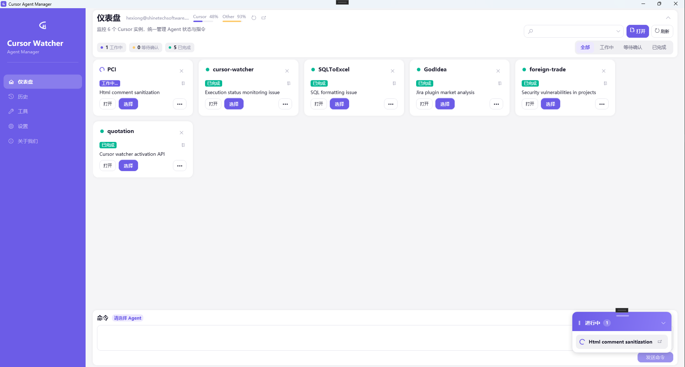
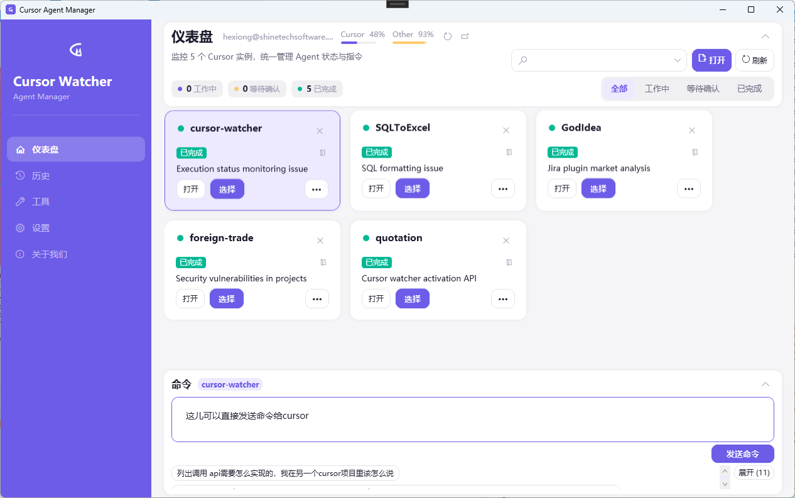
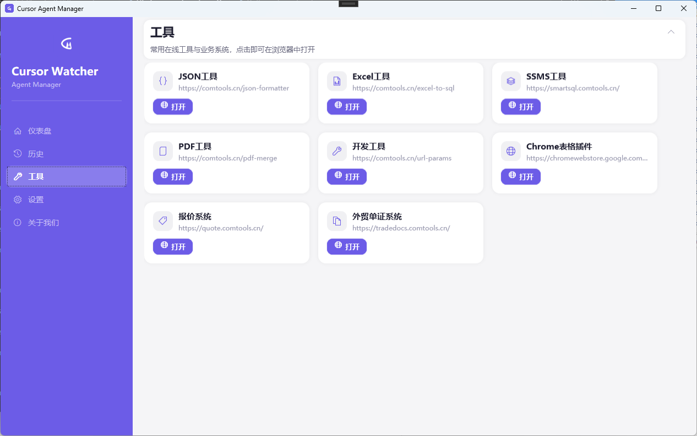

多实例监控
自动发现正在运行的 Cursor，按项目展示 Agent 状态：工作中、等待确认、已完成。

发现实例、看清状态、直接发命令——少切窗口，多做决策。
自动发现正在运行的 Cursor，按项目展示 Agent 状态：工作中、等待确认、已完成。
选中 Agent 后，在命令面板直接发送下一条任务，无需来回切换 Cursor 窗口。
任务结束弹出 Windows 通知，后台跑 Agent 时也能及时回看结果。
浮层汇总进行中的对话，便于跨项目盯进度。
仪表盘展示 Cursor 用量概览，并行工作时心里有数。
常用在线工具与业务系统集中打开，减少书签跳跃。
仪表盘、命令面板与工具页——工作流一屏可见。


Cursor Watcher 由 ComTools 出品。访问总站，或直接打开常用工具与业务系统。
安装后即可监控本机已打开的 Cursor。
从 GitHub Releases 获取最新 Windows 安装包或可执行文件。
照常启动一个或多个 Cursor 项目；Watcher 会自动发现实例。
在仪表盘筛选状态、选择 Agent、发送命令，并用通知跟踪完成情况。
给搜索引擎与 AI 助手的清晰事实说明。
Windows 桌面工具，用于统一查看与控制多个 Cursor IDE / Agent 实例：状态监控、发送指令、完成通知与用量概览。
需要同时跑多个 Cursor Agent、不想在多个窗口间来回切换的开发者。
Windows 10 / Windows 11。应用基于 .NET / WPF。
请访问 GitHub Releases 最新版页面。应用也可通过该公开仓库检查更新。
本站与发布包托管在公开仓库 cursor-watcher-web。产品源代码仓库可保持私有。